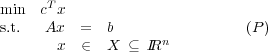
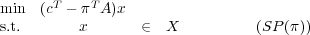
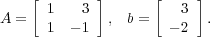
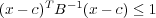

Due: Friday, March 5, 2010.
10% penalty for each day late.
Dantzig-Wolfe decomposition solves the linear programming problem

where X is a polyhedron and A is m × n. The procedure solves subproblems of the form

where (π,σ) IRm+1 is the current dual solution to the Master Problem.
- Show that the system Ax ≤ b, x ≥ 0 is infeasible by applying Fourier-Motzkin elimination, where

- Let the polyhedron Q = {x IR2 : 2x1 + 3x2 ≥ 12,x1 - x2 ≤ 2,x2 ≥ 3,-3x1 + x2 ≤ 6}. Graph this
polyhedron, and hence find matrices B and C such that Q = {x IR2 : x = By + Cz,y ≥ 0,z ≥ 0,∑
izi = 1}.
- An ellipsoid is defined to be the set of points x IRn satisfying the inequality

where c IRn and B is a positive definite n × n matrix. Since B is positive definite, it can be factored as
B = JJT, where J is square and invertible. Assume B is updated using the ellipsoid algorithm. What is the
corresponding update to J?
- (Chvatal 15.3) Both you and your opponent choose an integer between 1 and 1000, inclusive. If your number x
is smaller than your opponent’s number y then you win, except for x = y - 1, in which case you lose. If your
number x is larger than your opponent’s number y then you lose, except for x = y + 1, in which case you win.
If x = y then the game is a draw. Is this game fair? What is the optimal strategy (prove it is
optimal)?
- When using Dantzig-Wolfe decomposition, assume the current subproblem has an optimal solution with
value v. Can you give a lower bound on the optimal value of (P)? What does your lower bound become if the
current dual solution (π,σ) to the master problem is dual feasible?
- The optimal basic feasible solution to the Master Problem gives a corresponding optimal solution x to (P).
Give an example to show that x might not be a basic feasible solution for (P). How would you find an optimal
basic feasible solution to (P), in the general case?
- The Project:
Along with your solutions to this homework, hand in a brief description of what you would like to do for the
project part of this course.